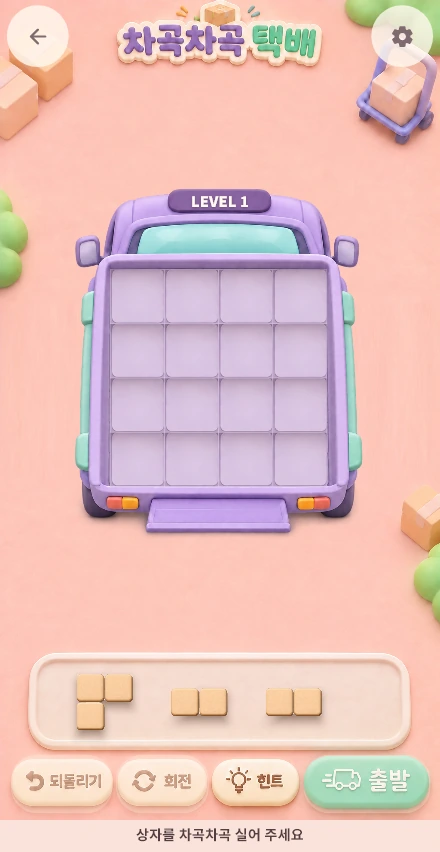

A LITTLE DELIVERY OF JOY
차곡차곡,
딱 맞는 즐거움.
작은 택배차에 상자를 하나씩.
돌리고, 맞추고, 순서까지 생각하면
어느새 오늘의 배송 준비 완료!
출시 준비 중 · 다운로드 링크는 출시 후 안내해 드려요.
200가지 배송,
차곡차곡 도전
차곡차곡 도전
끌어서 놓고, 돌려 보고배송 순서까지 생각하고딱 맞으면 기분 좋은 퍼즐

PACK A LITTLE. THINK A LITTLE.
손끝으로 가볍게,
생각은 한 칸 더.
조작은 간단하지만, 아무렇게나 실을 수는 없어요.
상자마다 꼭 맞는 자리를 찾아주세요.
빈틈에 딱 맞게, 차곡차곡.
모양이 다른 상자를 끌어 트럭에 실어요. 마지막 상자까지 들어갈 자리를 찾아보세요.
방향을 돌리면 길이 보여요.
상자를 회전하거나 이전 행동을 되돌려 보세요. 작은 방향 전환이 새로운 자리를 만들어요.
꺼낼 순서까지 생각해요.
배송 모드에서는 번호 순서대로 상자를 꺼내야 해요. 빈틈뿐 아니라 출구까지 살펴보세요.
YOUR NEXT DELIVERY
첫 배송부터,
마지막 한 상자까지.
처음에는 가볍게 적재를 익히고,
100스테이지부터는 한 번 더 고민해 보세요.
복잡한 상자 모양과 배송 순서가 기다리고 있어요.
200개 스테이지
진행 상황과 설정은 사용 중인 기기에 저장돼요.
WE’RE HERE TO HELP
배송 중 궁금한 점이 있나요?
저장, 힌트, 조작이 궁금하다면 고객지원을 확인해 주세요.
불편한 점이나 아이디어도 기다릴게요.